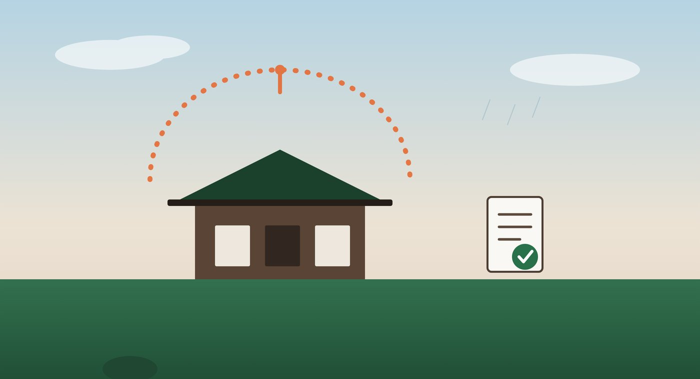

空き家は保険の加入条件や補償範囲が通常の住宅と異なる場合があります
「実家は空き家だけど、火災保険はそのままにしてある」というオーナー様は少なくありません。しかし、空き家は保険会社から見ると通常の居住用物件よりリスクが高いと判断されやすく、更新を断られたり、いざという時に補償されなかったりするケースがあります。この記事では、鹿児島の空き家オーナーが知っておきたい火災保険・地震保険の注意点をまとめました。
なぜ空き家は火災保険に入りにくいのか
多くの火災保険は「人が居住していること」を前提に契約されています。空き家になると、発見の遅れによる被害拡大・放火・不法侵入のリスクが高まるため、保険会社によっては更新を断られたり、契約時に割増料金が発生したりします。
特に注意したいのが、居住用として契約した保険をそのまま空き家状態で使い続けているケースです。契約時と実態が異なる「告知義務違反」とみなされると、いざ火災や台風被害に遭っても保険金が支払われない可能性があります。
空き家でも加入できる保険の種類
近年は空き家専用の火災保険商品を取り扱う保険会社も増えています。通常の住宅用保険より保険料はやや高めですが、空き家の実態に合わせた補償内容になっているため、無保険の状態よりはるかに安心です。
| 項目 | 通常の住宅用火災保険 | 空き家向け火災保険 |
|---|---|---|
| 加入条件 | 居住していること | 空き家でも加入可 |
| 保険料の目安 | 比較的安い | やや高め |
| 風災・水災補償 | プランによる | 付帯可能な商品が多い |
| 地震保険 | 単独付帯可 | 火災保険とセット契約が必要 |
地震保険は単独では契約できず、必ず火災保険とセットで加入する仕組みになっています。空き家向け火災保険を選ぶ際も、地震保険を付帯できるかどうかを確認しておきましょう。
保険選びで確認すべきポイント
告知事項は正確に
空き家であること、老朽化の程度、最終居住時期などは正直に告知しましょう。告知内容と実態が異なると、いざという時に補償を受けられなくなります。
免責金額と補償範囲
保険料を抑えるために免責金額（自己負担額）を高く設定するプランもありますが、実際に被害が出た際の負担が大きくなります。台風・水害リスクが高い鹿児島では、風災・水災補償が含まれているかを必ず確認しましょう。
- 居住しなくなった時点で保険会社に連絡・告知しているか
- 空き家向け商品への切り替えを検討したか
- 風災・水災の補償が含まれているか
- 地震保険を付帯するかどうか判断したか
- 免責金額の設定が適切か
保険料を抑えるための工夫
空き家向け保険は保険料が上がりやすい一方で、定期的な管理が行われている物件と判断されると条件が有利になることもあります。管理業者による巡回記録・写真報告があると、保険会社への説明材料としても活用できます。